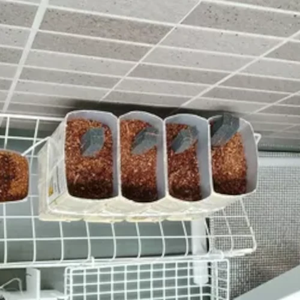
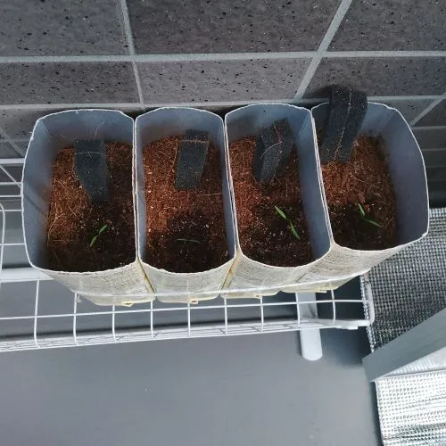
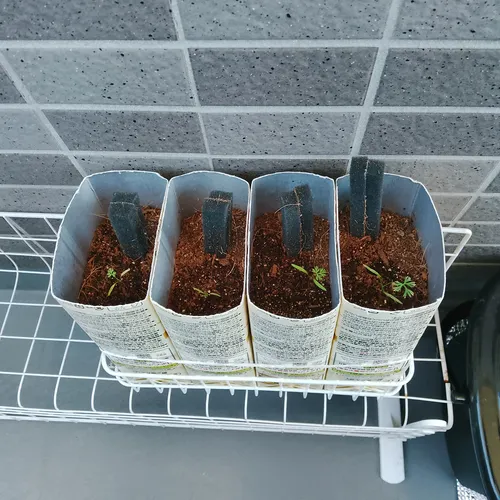

📆栽培記録
🥬芽キャベツさん
🥬野菜情報
| 👨👦👦Fam | アブラナ科 | |
|---|---|---|
| 📅SEAS | 春／秋 | |
| 🌡️TEMP | 15-25℃ | |
| 📐 SIZE |
🥬 PLNT | 15-20cm |
| 🍃 LEAF | 10-15cm | |
| 🧬 (pH) | 弱酸性-中性 (6.5-7.5) | |
| 🌞 SUN | やや強めに | |
| 🚿 H2O | 土が乾いたら多めに (加湿NG) | |
| 🍽️ FERT |
🧃 BASE | 少なめ |
| 🧪 POST | 定期的 | |
| 💖🤏 HARV | 種植えから60-70日 下から外側の芽を摘む | |
| 🔄🤏 REGW | 可能 中心から新芽が出る | |
| 📊 NUTR |
🥬 PLNT | 葉酸 ビタミンC ビタミンK キャベジン |
| 🍃 LEAF | ルテイン ミネラル βカロテン 食物繊維 | |
| 🐛 PEST & DMG |
アブラ虫 (Aphid) | 食害 すす病 ウイルス媒介 |
| ヨトウ虫 (Cutworm) | 食害 成長阻害 光合成阻害 | |
| 葉潜り蝿 (Leafminer) | ||
| 🤢 SICK & CAUS |
ベト病 | 👾カビ菌 |
| 菌核病 | ||
| 根コブ病 | ||
| モザイク病 | アブラ虫 | |
| ℹ️ ETC | モザイク病は治療不可、ただし、似たような症状の病気もあるので 落ち着いて症状を確認してから判断する。 モザイク病だった場合は可哀想だけど処分する😭。 | |
📝栽培情報
| 📍 LOC | ベランダ床 | ||
|---|---|---|---|
| 🔳 POT | ワイヤネット プランタ | ||
| 🌞⌚ SUN | 14:30-16:30 | ||
| ➕️ OPT |
TUAL | 土中へ酸素を供給する補助ツール | |
| TUAH | |||
| 🟫📊SOIL |
COCOブリック | 7 | |
| バーミキュライト | 3 | ||
| 🧪POST: Mix(1L) |
HYPONeX | 1ml(1000倍希釈) | |
| お酢 | 1ml(1000倍希釈) | ||
| ブドウ糖 | 0.5g-1g(1500倍希釈) | ||
| ヨモギ水 (自家製1L) | 希釈不要 (市販のヨモギエキスは要希釈) | ||
| 🧪📅 FREQ |
発芽時 | 芽が育つまでは水のみ | |
| 通常時 | 🧪を週1回 | ||
| 最盛期 | - | ||
| 🧪➕️ ADD | 活性剤 | 苗が弱っているときは与える | |
| 💗🦠 PALS |
納豆菌(バチルス菌) | 土壌改善 カビ・雑菌予防 | |
| 🛡️ PREV |
🤢 病気 |
お酢スプレー(1000倍希釈) 納豆菌スプレー(希釈不要) などを週1-2回吹きかける | |
| 👾 カビ | |||
| 🐛 害虫 | 虫除けプレート | ||
| 💡ETC | ブドウ糖はスプレーとセットで使用しないと、カビが繁殖しやすい | ||
7/1
 種蒔きは6月10日。季節が違うけど、芽は育ってる。土の水分が見えるように囲いはビニールで作ってみた、遮光性が心配。種はダイソーさんで購入。
種蒔きは6月10日。季節が違うけど、芽は育ってる。土の水分が見えるように囲いはビニールで作ってみた、遮光性が心配。種はダイソーさんで購入。
種蒔きは6月10日。季節が違うけど、芽は育ってる。土の水分が見えるように囲いはビニールで作ってみた、遮光性が心配。種はダイソーさんで購入。
7/15
 順調に育ってるように見える。育ったら中央で被った葉を収穫しようと思ったので、密集させているけど、どうなんだろう。
順調に育ってるように見える。育ったら中央で被った葉を収穫しようと思ったので、密集させているけど、どうなんだろう。
順調に育ってるように見える。育ったら中央で被った葉を収穫しようと思ったので、密集させているけど、どうなんだろう。
7/29
 葉が更に大きくなった。プランターの初期の水がなかなか抜けないので、あげる水分量を減らして通気性を上げようと思う。
葉が更に大きくなった。プランターの初期の水がなかなか抜けないので、あげる水分量を減らして通気性を上げようと思う。
葉が更に大きくなった。プランターの初期の水がなかなか抜けないので、あげる水分量を減らして通気性を上げようと思う。
8/12

8/26

9/9

🥕五寸人参さん
🥕野菜情報
| 科目 | セリ科 | ||
|---|---|---|---|
| 季節 | 春／秋 | ||
| 温度 | 15-25℃ | ||
| サイズ | 根 | 15-20cm | |
| 葉 | 20-25cm | ||
| 土壌(pH) | 弱酸性-中性 (6.0-6.8) | ||
| 太陽光 | 普通に | ||
| 水 | 土が乾いたら控えめに (加湿NG) | ||
| 肥料 | 元肥 | 少なめ | |
| 追肥 | 定期的 | ||
| 収穫 | 種植えから70-90日 | ||
| 再収穫 | 不可(葉は可能) | ||
| 栄養 | 根 | βカロテン カリウム 食物繊維 | |
| 葉 | ビタミンA ビタミンC 食物繊維 | ||
| 備考 | 葉物として育てるなら長期収穫が可能 | ||
📝環境情報
| 土成分 比率 |
COCOブリック | 7 |
|---|---|---|
| バーミキュライト | 3 | |
| 追肥 希釈率 |
HYPONeX | 1000倍 |
| ヨモギ水 | 1000倍 | |
| ブドウ糖 | 1000倍 | |
| 共存菌 | 納豆菌さん 菌根菌さん | |
| プランタ | パック | |
| ツール | TUAL | |
7/1

種蒔きは7月1日。葉物野菜として育てる。種がすごい小さくて不安。種はダイソーさんで購入。
7/15

当たり前だけど、種が小さいだけに、芽もすごい小さい。初めて知った。不安！！。
7/29

芽が育ってきたけど、やっぱりすごい小さいので不安、中央から本芽？が出る。
8/12

8/26

9/9

🍅鈴なりトマトさん
ℹ️野菜情報
【ナス科】
- ・種蒔き：３～４月
- ・サイズ：高さ80〜120cm（ミニトマトは小型）
- ・土壌pH：弱酸性（6.0〜6.8）
- ・温度：20〜30℃
- ・太陽光：強めに
- ・水やり：乾燥気味に。
- ・肥料：元肥はしっかり、追肥は定期的。
- ・病害虫：うどんこ病
モザイクウィルス
ハダニ - ・収穫：種まきから約70～90日
- ・再収穫：可能（脇芽から）
- ・栄養：リコピン
ビタミンＣ - ・その他：通常栽培では支柱が必要
📝関連
【栽培環境】
- ・土成分：ココブリック（７）
バーミキュライト（３） - ・コラボ：納豆菌さん
菌根菌さん - ・肥料：ハイポネックス
ヨモギ水
酢 - ・ツール：TUAL
- ・プランタ：TMLP
7/1
 種蒔きは6月10日。作成したプランターで逆さ栽培が可能か、検証のお手伝いをしてもらうため、最初から逆さ栽培の種蒔きをする。種はダイソーさんで購入。
種蒔きは6月10日。作成したプランターで逆さ栽培が可能か、検証のお手伝いをしてもらうため、最初から逆さ栽培の種蒔きをする。種はダイソーさんで購入。
種蒔きは6月10日。作成したプランターで逆さ栽培が可能か、検証のお手伝いをしてもらうため、最初から逆さ栽培の種蒔きをする。種はダイソーさんで購入。
7/15
 芽がボトルの口からしっかり出たので逆さ栽培へ移行する。ベランダの日当たりが悪いので位置を考える。このプランターでの逆さ栽培は問題なさそうに思える。
芽がボトルの口からしっかり出たので逆さ栽培へ移行する。ベランダの日当たりが悪いので位置を考える。このプランターでの逆さ栽培は問題なさそうに思える。
芽がボトルの口からしっかり出たので逆さ栽培へ移行する。ベランダの日当たりが悪いので位置を考える。このプランターでの逆さ栽培は問題なさそうに思える。
7/29
 うどんこ病が発生したため、感染した箇所をピンポイントでカットする。土の保水力が強すぎて、なかなか乾燥しないのが原因のようだ。一旦逆さ栽培を中止する。
うどんこ病が発生したため、感染した箇所をピンポイントでカットする。土の保水力が強すぎて、なかなか乾燥しないのが原因のようだ。一旦逆さ栽培を中止する。
うどんこ病が発生したため、感染した箇所をピンポイントでカットする。土の保水力が強すぎて、なかなか乾燥しないのが原因のようだ。一旦逆さ栽培を中止する。
8/12

8/26

9/9

🥒地這いキュウリさん
ℹ️野菜情報
【ウリ科】
- ・種蒔き：４～５月
- ・サイズ：つるの長さ1〜2m（横に広がる）
- ・土壌pH：弱酸性（5.5〜7.0）
- ・温度：20〜30℃
- ・太陽光：普通に
- ・水やり：よく吸うので多めに。
- ・肥料：元肥は普通に、追肥は定期的。
- ・病害虫：うどんこ病
アブラムシ - ・収穫：種まきから約50〜60日
- ・再収穫：可能
- ・栄養：カリウム
- ・その他：地面に広がる。
📝関連
【栽培環境】
- ・土成分：－
- ・コラボ：納豆菌さん
- ・肥料：ハイポネックス
ヨモギ水
酢 - ・ツール：－
- ・プランタ：BTLP
8/12
 種蒔きは8月12日。水耕栽培用のプランターを検証するのにお手伝いしてもらう。種はダイソーさんで購入。
種蒔きは8月12日。水耕栽培用のプランターを検証するのにお手伝いしてもらう。種はダイソーさんで購入。
種蒔きは8月12日。水耕栽培用のプランターを検証するのにお手伝いしてもらう。種はダイソーさんで購入。
8/26

9/9

9/23

10/07

10/21

🌱早生枝豆さん
ℹ️野菜情報
【マメ科】
- ・種蒔き：５～６月
- ・サイズ：高さ30〜50cm（早生は小型）
- ・土壌pH：弱酸性（6.0〜6.5）
- ・温度：20〜30℃
- ・太陽光：普通に
- ・水やり：乾燥に弱いのでこまめに。
- ・肥料：元肥は控えめ、追肥も控えめ。
- ・病害虫：カメムシ
ハダニ - ・収穫：種まきから約60〜70日（早生は早い）
- ・再収穫：不可
- ・栄養：タンパク質
ビタミンＢ群
カリウム - ・その他：根粒菌と共存する環境では肥料を控えめに。
📝関連
【栽培環境】
- ・土成分：ココブリック（７）
バーミキュライト（３） - ・コラボ：納豆菌さん
菌根菌さん
根粒菌さん - ・肥料：ハイポネックス
ヨモギ水
酢 - ・ツール：TUAL
- ・プランタ：TMLP
7/1
 種蒔きは6月10日。写真は3週間後。枝豆さんは最初から芽が強くて、安心感があった。成長スピードもすごい早かった。種のサイズが関係するらしい。
種蒔きは6月10日。写真は3週間後。枝豆さんは最初から芽が強くて、安心感があった。成長スピードもすごい早かった。種のサイズが関係するらしい。
種蒔きは6月10日。写真は3週間後。枝豆さんは最初から芽が強くて、安心感があった。成長スピードもすごい早かった。種のサイズが関係するらしい。
7/15
 枝豆さんのお世話中に、芽の一つから種の半分を誤って落としてしまう。この芽は成長がすごい遅くなり、高さも他の芽と比べて小さくなってしまった。ごめんなさい。
枝豆さんのお世話中に、芽の一つから種の半分を誤って落としてしまう。この芽は成長がすごい遅くなり、高さも他の芽と比べて小さくなってしまった。ごめんなさい。
枝豆さんのお世話中に、芽の一つから種の半分を誤って落としてしまう。この芽は成長がすごい遅くなり、高さも他の芽と比べて小さくなってしまった。ごめんなさい。
7/29
 早くも花が咲き始める、枝豆さんの花は受粉を自分でするので、何もしなくていいのだそうだ。茶色くなった花は受粉が終わって房を作る準備ができた花とのこと。
早くも花が咲き始める、枝豆さんの花は受粉を自分でするので、何もしなくていいのだそうだ。茶色くなった花は受粉が終わって房を作る準備ができた花とのこと。
早くも花が咲き始める、枝豆さんの花は受粉を自分でするので、何もしなくていいのだそうだ。茶色くなった花は受粉が終わって房を作る準備ができた花とのこと。
8/12

8/26

9/9

🌿ミニ大根さん
ℹ️野菜情報
【アブラナ科】
- ・種蒔き：春／秋
- ・サイズ：根の長さ15〜20cm
葉の幅20〜30cm - ・土壌pH：弱酸性〜中性（6.0〜7.0）
- ・温度：15-25℃
- ・太陽光：普通に
- ・水やり：土の表面が乾いたら多めに。
- ・肥料：元肥は普通に、追肥は少量
- ・病害虫：アブラムシ
ヨトウムシ - ・収穫：種まきから約50〜60日
- ・再収穫：不可（葉物野菜として栽培するなら長期的に可能）
- ・栄養：ビタミンC
ジアスターゼ - ・その他：土が硬いと根が割れる。
植え替えNG。
葉の方が栄養豊富。
📝関連
【栽培環境】
- ・土成分：ココブリック（７）
バーミキュライト（３） - ・コラボ：納豆菌さん
- ・肥料：ハイポネックス
ヨモギ水
酢 - ・ツール：TUAH
TUAL - ・プランタ：かご型
7/1
 種蒔きは6月14日。葉物野菜として育てる。ベランダ栽培で大根さんを何本も栽培するのは無理と思う。でも抜かなければ一年位持つらしい。種はダイソーさんで購入。
種蒔きは6月14日。葉物野菜として育てる。ベランダ栽培で大根さんを何本も栽培するのは無理と思う。でも抜かなければ一年位持つらしい。種はダイソーさんで購入。
種蒔きは6月14日。葉物野菜として育てる。ベランダ栽培で大根さんを何本も栽培するのは無理と思う。でも抜かなければ一年位持つらしい。種はダイソーさんで購入。
7/15
 葉っぱはかなり丈夫に育ってるように思える。季節が違うけど今のところ問題はなさそう。
葉っぱはかなり丈夫に育ってるように思える。季節が違うけど今のところ問題はなさそう。
葉っぱはかなり丈夫に育ってるように思える。季節が違うけど今のところ問題はなさそう。
7/29
 西日に当てすぎたかもしれない。葉っぱはあまり育ってないように見える。多分、根っこの方に栄養を回していると思われる。
西日に当てすぎたかもしれない。葉っぱはあまり育ってないように見える。多分、根っこの方に栄養を回していると思われる。
西日に当てすぎたかもしれない。葉っぱはあまり育ってないように見える。多分、根っこの方に栄養を回していると思われる。
8/12

8/26

9/9

🍃モロヘイヤさん
ℹ️野菜情報
【シナノキ科】
- ・種蒔き：５～６月
- ・サイズ：高さ1〜1.5m
- ・土壌pH：弱酸性〜中性（6.0〜7.0）
- ・温度：25〜35℃（暑さに強い）
- ・太陽光：普通に
- ・水やり：乾燥に弱いのでこまめに。
- ・肥料：元肥は普通に、追肥は少量。
- ・病害虫：アブラムシ
- ・収穫：種まきから約40〜60日
- ・再収穫：可能（摘芯：50〜60cmになった頃から、先端の15〜20cmほどの柔らかい芽を摘み取る）
- ・栄養：ビタミンA
カルシウム - ・その他：成長が早く丈夫。
📝関連
【栽培環境】
- ・土成分：ココブリック（７）
バーミキュライト（３） - ・コラボ：納豆菌さん
菌根菌さん - ・肥料：ハイポネックス
ヨモギ水
酢 - ・ツール：TUAL
- ・プランタ：パック
8月12日
 種蒔きは8月12日予定。種はダイソーさんで購入。
種蒔きは8月12日予定。種はダイソーさんで購入。
種蒔きは8月12日予定。種はダイソーさんで購入。
8月26日

9月9日

9月23日

10月7日

10月21日

🥔ジャガイモさん
ℹ️野菜情報
【ナス科】
- ・種蒔き：春／秋
- ・サイズ：高さ30〜60cm
- ・土壌pH：酸性（5.0〜6.0）
- ・温度：15-25℃
- ・太陽光：普通に
- ・水やり：控えめに（過湿NG）。
- ・肥料：元肥は普通に、追肥は少量。
- ・病害虫：そうか病
アブラムシ - ・収穫：種まきから約80〜100日
- ・再収穫：不可
- ・栄養：ビタミンC
炭水化物 - ・その他：アルカリに弱い（そうか病に注意）。
📝関連
【栽培環境】
- ・土成分：－
- ・コラボ：納豆菌さん
- ・肥料：ハイポネックス
ヨモギ水
酢 - ・殺菌：銅イオン
- ・ツール：－
- ・プランタ：TBBP
BTLP
未定
 栽培は未定。NASAの噴霧耕栽培を半噴霧耕栽培できるのではないかと試しに作ったプランターの検証を手伝ってもらう予定。
栽培は未定。NASAの噴霧耕栽培を半噴霧耕栽培できるのではないかと試しに作ったプランターの検証を手伝ってもらう予定。
栽培は未定。NASAの噴霧耕栽培を半噴霧耕栽培できるのではないかと試しに作ったプランターの検証を手伝ってもらう予定。
未定

未定

未定

未定

未定